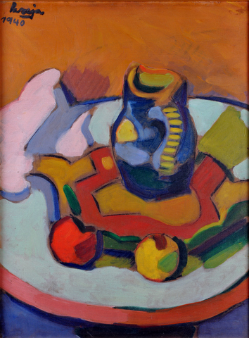
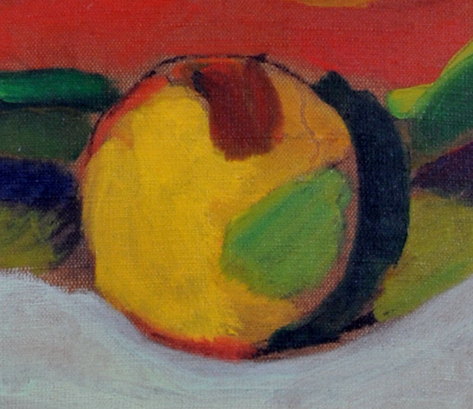
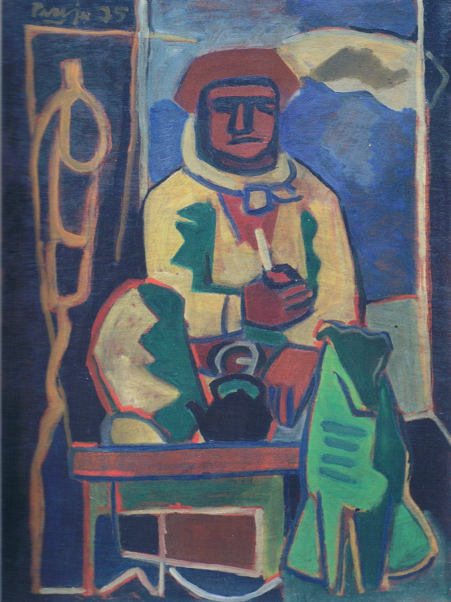
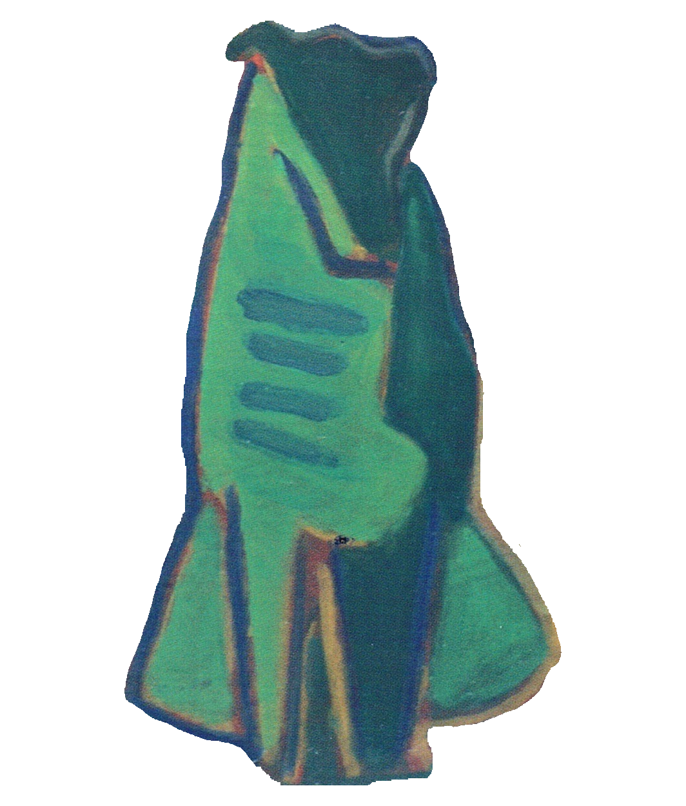

En esta unidad observaremos los elementos que componen la pintura de Pareja.
Todo comienza con la materia color. La materia se manifiesta en color a través de la línea y de las formas. Pareja arma sus cuadros componiendo con estos elementos de manera conjunta.
Sus reflexiones sobre la materia color nos enseñan que el volumen se conforma por un plano luz y un plano sombra. Es decir, un objeto se compone con un plano de un color determinado que será la parte de luz y otro plano de otro color que será la parte de sombra. Pero estos no estarían completos sin un tercer color. Este tercer color es el color del espacio, del fondo. Es fundamental la relación de estos tres colores.
Materia Color
Síntesis
Esta idea de composición con la materia color, como él le llamaba, nos indica que el color adquiere valor según dónde se encuentre. El color es relativo porque vale por cómo se relaciona con los demás colores. Observemos la siguiente pintura de Miguel Ángel Pareja.


En la figura 1 vemos la obra Naturaleza muerta, pintada en 1940 a pocos años de la beca que lo llevó a estudiar a París con Roger Bissiere.
La figura 2 es un acercamiento a uno de los frutos de la obra. Recientemente veíamos la importancia de la relación de tres colores: el color luz, el color sombra y el color de fondo.
Lo importante es la relación entre ellos y no qué colores son. ¡Por eso es posible generar sombra con rojo! Normalmente creemos que la sombra se logra con marrón, gris o negro, pero esto no es necesariamente así.
En el caso de este fruto vemos más de tres colores, casi once. Esto nos confirma que debemos pensar en tres grupos de colores que se relacionan: un grupo de colores es luz, otro grupo es sombra y otro grupo es fondo. Podemos ordenarlos de la siguiente forma:
Los amarillos en este caso son los planos de color luz.
Los rojos, el verde y el rosa son los planos de color sombra.
Todos los colores que rodean al fruto son el fondo.
Con tres colores o tres grupos de colores Pareja compone sus figuras
Los colores son elegidos en relación con las formas y la composición del todo.
Como veremos, a lo largo de los años Pareja atravesó un proceso de síntesis con el que alcanzó una pintura cada vez más simple en busca de lo esencial de las cosas. Lo vemos en la siguiente obra:


Esta pintura se llama Gaucho tomando mate, fue realizada en 1975. Realizaremos otro ejercicio visual para comprobar cómo Pareja armaba sus figuras.
Prestemos atención al perro. Este no es un perro de dos colores, es un perro de un sólo color. El verde oscuro es el plano de sombra y el verde claro es el plano de luz. El perro resulta de una simplificación mayor que el fruto de la obra anterior. La imagen del perro cuenta con un color luz y un color sombra, mientras que el fruto contaba con un grupo de colores luz y un grupo de colores sombra.
PROPUESTA
Ahora observa tú la ropa del gaucho, su camisa y pantalón.
¿De qué color es su vestimenta?
¿Por qué aparecen dos colores en ella?
El color del espacio ¿es uno o son varios?
¿Cuáles son los tres colores que componen las figuras de la vestimenta?